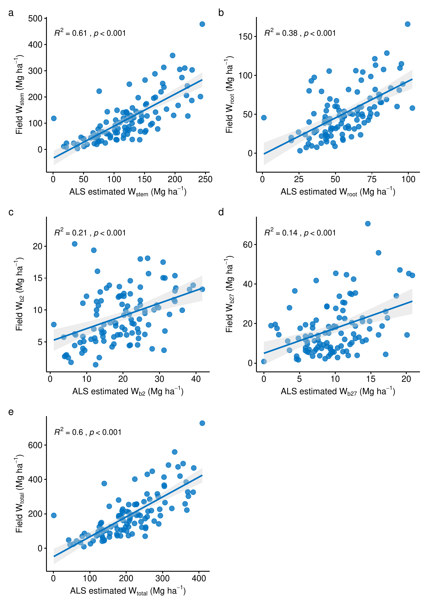
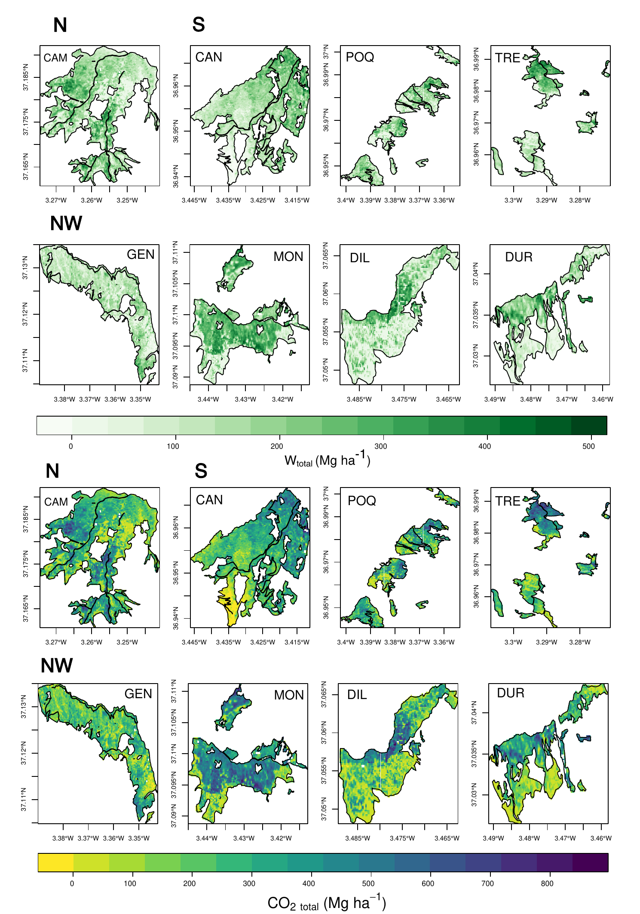
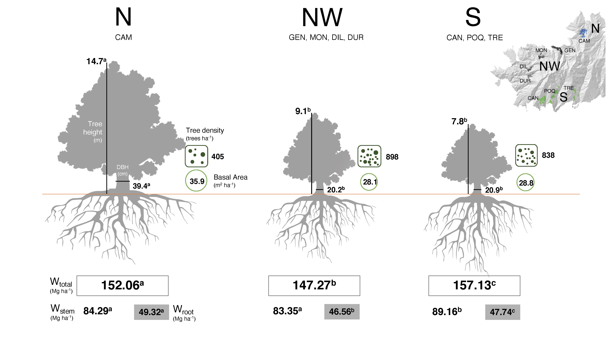
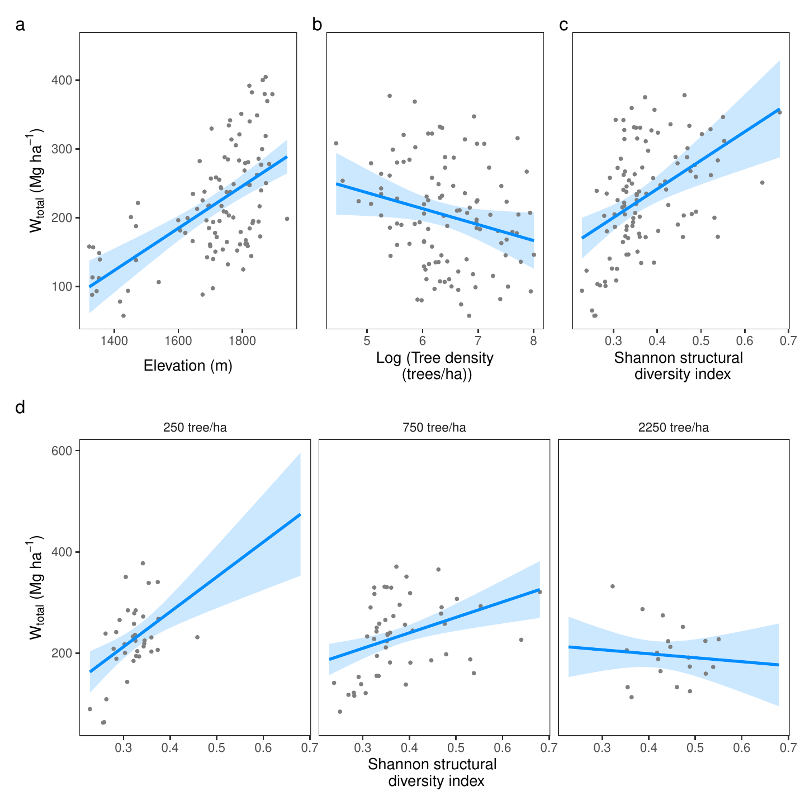
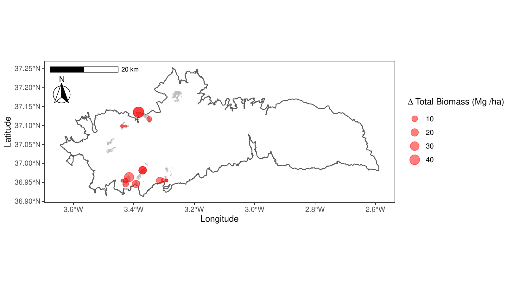

6 Carbon sequestration of coppiced forests of Q. pyrenaica. An study case from the rear-edge of its distribution
Antonio J. Pérez-Luque; Mihai Tanase; Cristina Aponte & Regino Zamora (In prep.)
6.1 Introduction
Forest ecosystems are suppliers of several ecosystems services to humans (Iverson et al. 2018, Martínez Pastur et al. 2018, Noce and Santini 2018). Forest ecosystem services include provisioning services (e.g. wood and non-wood forest products), regulating services (e.g. climate regulation), habitat or support services, and cultural services. In Mediterranean region, humans have been exploiting forest resources for centuries (Valbuena-Carabaña et al. 2010), however in the last decades a strong abandonment of traditional activities in mountains regions have been observed, mainly due to the rural exodus and the low economic value of forest products activities (Debussche et al. 1999, MacDonald et al. 2000, Chauchard et al. 2007). As a result, many forests currently have high tree-density stands, with an increased competition for resources, which can lead to widespread weakening of stand, increasing the vulnerability of forests to abiotic and biotic disturbances (Tardieu et al. 2018). This may be especially relevant for forests stands located at the rear-edge of the species distribution (Hampe and Petit 2005), which are usually considered more vulnerable to climate change compared with populations at the centre of a species’ range (Rehm et al. 2015, Fady et al. 2016, Pironon et al. 2017).
Q. pyrenaica (Pyrenean oak) is a marcescent Mediterranean tree species widely distributed throughout southwestern France and the Iberian Peninsula, reaching their southern limit in mountain areas of northern Morocco (Franco 1990). The rear-edge populations of this species are restricted to high-mountain areas where these populations persists as isolated nuclei with ecological conditions very different from those of the main distribution area (Pérez-Luque et al. 2021). Due to its ability to resprout from stumps and the entire root system, most stands of this species have been coppiced for centuries mainly for firewood, charcoal, tannins and woody pasture production (Ximénez de Embún 1961, Sánchez Palomares et al. 2008). All these anthropogenic processes have transformed native woodland structures (Tárrega et al. 2006), and nowadays it is difficult to find stands of this oak that can be qualified as natural or pristine forests (Ruiz de la Torre 2006). Paradoxically, after the diminution of human pressure on woodlands over the last decades, the abandonded coppices of Q. pyrenaica present an advanced state of degradation with important ecological, economic and social problems (Montoya and Mesón 1979, Bravo et al. 2008, Vericat et al. 2012, Piqué and Vericat 2015, Piqué et al. 2018). Due to the importance of this species, several management practices (e.g. conversion to high forest) have been proposed to improve the state of abandoned coppices (Montoya 1982, 1983, Serrada et al. 1992, Bravo et al. 2008, Vericat et al. 2012), although they have not been very successful, partly due to the lack of a comprehensive understanding of the physiological mechanisms underpinning tree stagnation (Salomón et al. 2017, Valbuena-Carabaña and Gil 2017). In view of this situation, it is essential to seek for alternative management practices to the traditional uses of the abandoned coppices (Mesón and Montoya 1985, San Miguel et al. 2012). Some management alternatives based on pastoral use have been proposed (Herrera Calvo 2016), but to our knowledge few proposals have focused on the provision of the ecosystem services provided by this oak forests (Piqué and Vericat 2015, Piqué et al. 2018).
The carbon sequestration is one of the most relevant ecosystems services provided by Mediterranean forests (Noce and Santini 2018, Gauquelin et al. 2018). Carbon stock can be assumed as an indicator of the capacity of ecosystems to contribute to climate regulation because their potential to influence atmospheric CO2 concentration (Lauterbach 2007, Luyssaert et al. 2008). Mediterranean forests represent a carbon sink expected to increase over coming decades (Cañellas et al. 2017, Pasalodos-Tato et al. 2017). Improving carbon estimation and our understanding of the effects of forest management could be useful for forest managers, which could include carbon sequestration among the different objectives pursued in the forests management (Ruiz-Peinado et al. 2017). Several studies have been conducted to determine carbon sequestration by forest ecosystems in the Mediterranean region based on data from forest carbon inventories, field measurements, remote sensing, laser scanning and growth simulation (Chiesi et al. 2005, Cañellas et al. 2008, García et al. 2010, Vayreda et al. 2012, Guerra-Hernández et al. 2016, Simonson et al. 2016). LIDAR (Light Detection And Ranging) has emerged as an effective technique for quantifying aboveground biomass in forests (Lefsky et al. 2002, Beland et al. 2019, Xiao et al. 2019) and has been also used for quantifying carbon stocks (Simonson et al. 2016, Zhao et al. 2018). In this study we combined Airborne Laser Scanning LIDAR data and field inventories to estimate the biomass of Pyrenean oak woodlands (Q. pyrenaica) of Sierra Nevada (southern Spain), and then to assess the carbon sequestration capacity of those forests and their role as carbon sink. The specific objectives are: (i) to estimate the potential capacity of these ecosystems to sequester carbon dioxide and to evaluate the temporal trends for this ecosystem service; (ii) to explore the factors that explain the C stock for Q. pyrenaica woodland in Sierra Nevada; and (ii) to analyse the differences in biomass and carbon sequestration among oak populations within this mountain region.
6.2 Material and Methods
6.2.1 Study site and oak woodlands
The study area is located in Sierra Nevada (37°N, 3°W), a high-mountain range of southern of Andalusia with elevations of up to 3 482 m.a.s.l.. The climate is Mediterranean, characterized by cold winters and hot summers, with pronounced summer drought and increasing aridity with decreasing altitude, and marked variability according to elevation and aspect. In Sierra Nevada there are eight Pyrenean oak populations (2 400 ha), distributed from 1 100 to 2 000 m.a.s.l. and often associated with major river valleys. Those eight oak populations could be grouped in three clusters, based on their structure and floristic composition: the northern (N), the northwestern (NW), and the southern (S) clusters (Pérez-Luque et al. 2021). Q. pyrenaica woodlands in this mountain region represent a rear edge of their habitat distribution (Hampe and Petit 2005). They are the richest forest formation in vascular plant species of Sierra Nevada, containing several endemic and endangered plant species (Lorite et al. 2008), and they also harbor high levels of intraspecific genetic diversity (Valbuena-Carabaña and Gil 2013). However, these relict forests have undergone intensive human use throughout history (Camacho-Olmedo et al. 2002a). Furthermore, the conservation status of this species for southern Spain is considered "Vulnerable" and it is expected to suffer from climate change, reducing its suitable habitats in the near future (Benito et al. 2011, Gea-Izquierdo et al. 2013, 2017).
| ll@ Tree fraction | Equation |
|---|---|
| Stem and thick branches | *** = 0.0261 DBH2 |
| Medium branches | *** = 0.0260 DBH2 + 0.536 h + 0.00538 DBH2 h |
| Thin branches and leaves | *** = 0.898 DBH 0.445 h |
| Roots | *** = 0.143 DBH2 |
6.2.2 Biomass data
We used two types of field data, inventories (previous collected, 90 plots), and field data (20 plots) collected for this study.
| lllllll [0.5pt] Source | n plots | area (m2) | year | # trees | DBH (cm) | Tree height (m) |
|---|---|---|---|---|---|---|
| Dataset of Global Change, altitudinal range shift and colonization of degraded habitats in Mediterranean mountains (MIGRAME) PerezLuqueetal2015DatasetMIGRAME | 30 | 300 | 2012 | 1422 | 10.77 (7.5–105) | 4.27 (1.1–18) |
| Sierra Nevada Global Change Observatory Aspizuaetal2012EvaluacionGestion,Zamoraetal2017GlobalChange | 3 | 400 | 2011,2012 | 122 | 19.03 (8–36) | 9.57 (4.7–16.4) |
| Protection of key ecosystem services by adaptive management of climate change endangered mediterranean socioecosystems BareaAzconetal2017LIFEADAPTAMED. Forest inventories from Action C6 of the project | 16 | 706.85 | 2015, 2017 | 650 | 13.26 (7.6–50) | 6.96 (3.6–14) |
| Protection of key ecosystem services by adaptive management of climate change endangered mediterranean socioecosystems BareaAzconetal2017LIFEADAPTAMED. Forest inventories associated with dendrochronological plots | 2 | 254.47–530.93 | 2018 | 191 | 7.73 (2.1–42.2) | 4.48 (1.1–13.6) |
| Forest inventories from dendroecological research PerezLuqueetal2020LanduseLegacies | 39 | 314.16 | 2018 | 457 | 26.3 (2.86–122.55) | 10.31 (3–20.4) |
| This study field data | 23 | 254.47–706.85 | 2019,2020 | 382 | 24.32 (2.91–67) | 11.42 (1.7–20.6) |
Field data were obtained from a compilation of several forest inventories carried out in the Sierra Nevada mountain range (Table [tab:carbon:inventories]). In a first step, we selected plots included in the current distribution of Pyrenean oak in Sierra Nevada (Pérez-Luque et al. 2019). Then, only plots with complete information (i.e. those where all tree individual with dbh > 7.5 cm were measured), and pure stands (i.e. Q. pyrenaica composition > 70%) were selected. A spatial filter was also applied to discard overlapping plots. We also discarded old forests inventories (i.e. more than 10 years). All selected plots were measured between 2012 and 2020. In order to have a representation of all the oak populations, additional circular plots (radius 9 to 16 m) were sampled between October 2019 and March 2020. The plots were selected in proportion to the extension of the different ecological strata, providing representative stands with a variety of stand structure and site conditions. A sub-meter global satellite receiver (Leica Zeno 20 GIS, Leica Geosystems, Switzerland) was used to survey plot centers. We tagged and measured all tree individuals within the circular plot. Diameter at breast height (DBH) was measured to the nearest 0.1 cm with a graduated caliper, and tree height was measured to the nearest 0.1 m with a hypsometer. Azimuth and distance of each measured tree from the plot center were also recorded. A total of 113 plots (254 to 400 m\(^2\)) were finally selected with a total of 3 224 measured trees (Table [tab:carbon:inventories]).
6.2.3 Biomass and Carbon estimation
The biomass of individual trees was estimated according to published species-specific allometric equations (Ruiz-Peinado et al. 2012). For each tree, dry biomass was estimated as a sum of the different fractions (Carvalho and Parresol 2003): stem plus branches with a diameter > 7 cm (); branches with a diameter between 2 and 7 cm (), branches with a diameter of less than 2 cm with leaves (), and the belowground fraction () the roots. Biomass of each fraction were computed using the equations developed for Q. pyrenaica (Ruiz-Peinado et al. 2012) (Table [tab:carbon:biomasseq]).
The carbon content in each biomass fraction was calculated by multiplying each value by 0.475, i.e. the species-specific carbon content of the biomass for this species (Ibáñez et al. 2002, Montero et al. 2005). The equivalent tree CO2 sequestration was estimated by multiplying the tree carbon content by 3.67, i.e. the ratio between CO2 molecular weight and C atomic weight. Biomass and carbon storage of individual trees were aggregated at plot level and scaled-up to hectarea to obtain the values of biomass for each fraction (Mg ha\(^{-1}\)), and the total carbon storage (Mg ha\(^{-1}\)) at the plot level.
6.2.4 Airborne Laser Scanning (ALS) data and processing
Airborne Laser Scanning (ALS) data were acquired in 2014, with up to four returns measured per pulse, within the Spanish National Plan for Aerial Orthophotography (PNOA, by its Spanish language acronym) were used to generate the biomass map. The nominal point density was 0.5 points m\(^-2\) with a vertical accuracy better than 0.20 m. The data were examined for extent, point density and consistency with overlapping points from adjacent scanning lines being removed. Gap filling was carried out when data from additional flight lines were available. The point clouds were classified into ground and non-ground using the Multiscale Curvature Classification (MCC) algorithm (Evans and Hudak 2007). Non-ground returns were labelled as vegetation as no infrastructure is present in the study area. The classified point cloud (ground class) was used to derive a digital elevation model (DEM). The DEM was subsequently used to compute the height above ground (i.e. normalized height) for the points classified as vegetation. Based on the height above ground, four generic groups of lidar metrics were generated at 20-m spatial resolution: canopy metrics, strata metrics, first returns metrics and all returns metrics. For example, canopy metrics included canopy closure at different heights (i.e., 1-, 2-, 4-, 6-, 8-, 10-, and 12-m) while strata metrics included canopy closure and forest density for specific strata (i.e., 0-0.5 m, 1-6 m, 1-8 m, 1-10 m, 1-12 m, 1-16 m, 1-24 m, 2-4 m, 2-6 m,..., 8-16 m, 8-24 m). Percentiles were computed using first returns as well as all returns metrics. Canopy closure metrics were defined as the proportion of first returns over a specific height threshold. Strata-specific canopy closure and forest density metrics were defined as the proportion of first returns and, respectively, all returns falling within specific height thresholds. Such metrics, representing proxies of forest structural characteristics, were aggregated at plot level and correlated with field-based plot biomass estimates to select optimum predictor variables for forest biomass. A two-step variable selection approach was used to identify the best lidar predictors for each biomass fraction. First, correlation among all 250 lidar variables was assessed and highly correlated (|r| > 0.7) variables were excluded from the dataset after retaining those with the highest correlation with biomass response variables (, , , , and ). Second, the VSURF variable selection algorithm was implemented in R (Genuer et al. 2019) to identify the best predictors for each response variable. Briefly, this algorithm computes random forest models and variables are selected based on their importance value and on their capacity to decrease the OOB (out-of-bag) error of these models (Genuer et al. 2019).
Biomass maps were generated based on the selected predictor lidar variables using a Support Vector Machines (SVM) classification. The SVM model’s stability and error were computed by randomly splitting the dataset (n=113 plots) into calibration and validation metrics (using a 60:40 rule). 100 random iterations were carried out to compute average error metrics including the average root mean squared error (RMSE), the relative RMSE (RMSE%) and the correlation (r) between predicted and observed biomass. SVM biomass models were applied over the extents of the eight oak populations. For each biomass fraction, we compared the performance of the plot-scale biomass measurements (field data) with the predicted values derived from the ALS modelling. We used graphical methods and computed a Pearson correlation coefficient.
6.2.5 Cartography of biomass and C stocks
For each of the estimated biomass fractions obtained from the modelling, we generated a map of biomass and sequestered C for each of the oak populations studied. The distribution of Q. pyrenaica forests in Sierra Nevada were obtained from vegetation and ecosystem maps of Sierra Nevada at 1:10 000 scale (CMAOT 2014, Pérez-Luque et al. 2019). The pixel size selected to compute the ALS-derived metrics and to map the biomass and C stock was 20 m × 20 m, representing an area of 400 m2, similar to the field plot dimensions (mean = 439 m2, range 254 - 706.85) (Table [tab:carbon:inventories]).
6.3 Temporal evolution of tree biomass in Q. pyrenaica stands
We explored the temporal variation of biomass for this species at national level, and then only for plots located in our study area. To analyze the temporal evolution of the tree biomass of Q. pyrenaica forests, we used data from Spanish National Forest Inventory (SNFI), an extensive national database of forest surveys distributed systematically across the forested area of Spain. We used data from the second (Villaescusa and Díaz 1998) and the third Spanish Forest Inventory (Villanueva 2005), carried out during 1986-1996 and during 1997-2007, respectively. The SNFI is based on a network of circular plots which allows forest characterization and includes exhaustive information on the structure and composition of canopy and understory woody species. Each plot consisted of four concentric circles of radii 5-, 10-, 15- and 25-m, in which DBH and total height were measured in all trees of DBH > 7.5-, 12.5-, 22.5- and 42.5-cm, respectively (Alberdi et al. 2016). Of the SNFI3 plots where Q. pyrenaica was present (n = 6382 plots), we selected only plots measured previously in the SNFI2, and with Q. pyrenaica as the main dominant species (n = 2269). For each plot, we computed aboveground and belowground biomass of each Q. pyrenaica adult tree using allometric equations (Table [tab:carbon:biomasseq]) (Ruiz-Peinado et al. 2012). We scaled-up to hectarea and aggregated at plot level. The temporal variation of biomass was estimated as the difference between biomass value of the same plot at the SNF3 and at the SNF2: \[\Delta Biomass = B_{i, SNFI3} - B_{i, SNFI2}\]
6.4 Statistical analysis
We analyzed differences of the ALS-derived biomass and carbon dioxide sequestration for each fraction among the different oak populations and oak-population clusters. Non parametric Kruskal-Wallis test were used because data do not fit normality, homocedasticity or independence. Multiple pairwise comparisons after this test were made using Dunn’s test with Bonferroni’s correction. We also explored differences in the forest structure among oak-populations clusters. For this purpose, we computed several forest attributes for each field plot: mean tree height (m), average DBH (cm), basal area (m2 ha-1) and tree density (trees ha-1). Differences for stand attributes among oak-population clusters were also analyzed with the non-parametric Kruskal-Wallis test, followed by multiple pairwise comparisons using Dunn’s test with Bonferroni’s correction.
We used generalized linear models (GLM) to analyze the effect of the different explanatory variables and their interactions on the forest C stock (i.e.: , , ). As explanatory variables we selected: topographic variables (elevation, slope and aspect); competition related-variables (tree density); stand-structural variables (Shannon structural diversity index and vertical strata richness); and microclimatic variables (topographic wetness index, a surrogate of the moisture content). Topographic variables were derived from a digital elevation model at 5 x 5 meters resolution (Spanish National Geographic Institute). For each plot we compute the tree density (trees ha-1), and the strata richness (number of different diametric classes) using the DBH. We considered the following diametric classes: <2.5 cm; each 5 cm-intervals; and >52.5 cm. We also characterized the structural diversity by computing a Shannon-Weber structural diversity index following (Rio et al. 2003). This index is considered a surrogate of structural heterogeneity (McElhinny et al. 2005, Gadow et al. 2012). The topographic wetness index is an estimate of the predicted water accumulation and is considered a surrogate of soil-moisture (Zinko et al. 2005, Petroselli et al. 2013). It was derived from the high-resolution digital elevation model using the dynatopmodel R package (Metcalfe et al. 2018). Stepwise model selection was applied starting from the saturated model and removing the least significant term until there was no further decrease in the Bayesian Information Criterion (BIC). We considered all models within 2 BIC units as equivalent in terms of fit.
All analyses were conducted using the R software (R Core Team 2020), and the vegan (Oksanen et al. 2019), randomForest (Liaw and Wiener 2002), nlstools (Baty et al. 2015), nlme (Pinheiro et al. 2021), biostat (Gegzna 2020), glmulti (Calcagno 2020), MuMIn (Bartoń 2020) and VSURF packages (Genuer et al. 2019).
6.5 Results
6.5.1 Biomass modelling
The LIDAR-metrics that best predicted the each-fraction biomass values are presented in Table [tab:carbon:lidarmodels]. The rumple index, elevation, canopy height maximum and 99th percentile of canopy height were the LIDAR-metrics better explained the biomass model for the , and fractions (Table [tab:carbon:lidarmodels]), and they also were selected in biomass model for the and fractions. The better models provided R2 values ranged from 0.17 () to 0.45 () (Table [tab:carbon:lidarmodels]).
The evaluation of the observed (field-measured) versus the ALS-estimated values for all biomass fractions are presented in Figure [fig:carbon:compara]. The higher correlations were obtained for and fractions which showed 0.61 and 0.60 R2 values respectively. The other biomass components showed significant but weaker correlations, particularly the fraction with a R2 value of 0.14 (Figure [fig:carbon:compara]).

| Stand features | N | NW | S | * * | Statistic | p-value | |||
|---|---|---|---|---|---|---|---|---|---|
| Tree height (avg.) | 14.69 ± 0.81 a | 9.10 ± 0.55 b | 7.81 ± 0.36 b | 15.23 | 0.001 | ||||
| Tree height (min) | 10.32 ± 1.49 a | 4.02 ± 0.52 b | 3.71 ± 0.31 b | 11.20 | 0.004 | ||||
| Tree height (max) | 18.54 ± 0.68 a | 14.76 ± 0.40 b | 13.89 ± 0.33 b | 12.67 | 0.002 | ||||
| DBH | 39.36 ± 6.00 a | 20.18 ± 1.24 b | 20.88 ± 1.54 b | 8.43 | 0.015 | ||||
| Basal Area | 35.99 ± 6.61 a | 28.08 ± 2.34 a | 28.81 ± 2.26 a | 1.31 | 0.518 | ||||
| Tree density | 405.51 ± 165.87 a | 898.86 ± 104.02 a | 838.35 ± 106.01 a | 3.69 | 0.158 | ||||
| Field-measured biomass | |||||||||
| 182.89 ± 33.18 | 113.21 ± 11.41 | 117.18 ± 11.72 | 4.30 | 0.116 | |||||
| 28.82 ± 5.37 | 17.49 ± 1.85 | 17.31 ± 1.69 | 5.25 | 0.072 | |||||
| 8.75 ± 2.06 | 9.73 ± 0.74 | 8.63 ± 0.48 | 1.06 | 0.587 | |||||
| 65.52 ± 12.04 | 51.12 ± 4.26 | 52.46 ± 4.11 | 1.31 | 0.518 | |||||
| ALS-derived measured | Total | ||||||||
| 84.29 ± 0.50 a (1.03 10\(^6\)) | 83.35 ± 0.37 a (1.98 10\(^6\)) | 89.16 ± 0.33 b (2.62 10\(^6\)) | 2296.42 | 0.001 | 5.62 10\(^6\) | ||||
| 8.71 ± 0.04 a (0.10 10\(^6\)) | 8.24 ± 0.03 b (0.18 10\(^6\)) | 8.37 ± 0.02 c (0.24 10\(^6\)) | 1446.20 | 0.001 | 0.52 10\(^6\) | ||||
| 13.16 ± 0.08 a (0.16 10\(^6\)) | 13.10 ± 0.06 a (0.31 10\(^6\)) | 14.18 ± 0.05 b (0.42 10\(^6\)) | 2138.11 | 0.001 | 0.89 10\(^6\) | ||||
| 49.32 ± 0.21 a (0.59 10\(^6\)) | 46.56 ± 0.16 b (1.08 10\(^6\)) | 47.74 ± 0.13 c (1.4 10\(^6\)) | 2978.22 | 0.001 | 3.07 10\(^6\) | ||||
| 152.06 ± 0.81 a (1.85 10\(^6\)) | 147.27 ± 0.60 b (3.48 10\(^6\)) | 157.13 ± 0.53 c (4.61 10\(^6\)) | 2369.70 | 0.001 | 9.94 10\(^6\) | ||||
| CO\(_2\) stock stem | 146.93 ± 0.86 a (1.03 10\(^6\)) | 145.30 ± 0.64 a (1.89 10\(^6\)) | 155.44 ± 0.57 b (2.44 10\(^6\)) | 2296.42 | 0.001 | 5.36 10\(^6\) | |||
| CO\(_2\) stock b27 | 15.19 ± 0.06 a (1.79 10\(^6\)) | 14.37 ± 0.05 b (3.44 10\(^6\)) | 14.59 ± 0.04 c (4.57 10\(^6\)) | 1446.20 | 0.001 | 9.8 10\(^6\) | |||
| CO\(_2\) stock b2 | 22.95 ± 0.15 a (0.28 10\(^6\)) | 22.85 ± 0.11 a (0.54 10\(^6\)) | 24.73 ± 0.10 b (0.73 10\(^6\)) | 2138.11 | 0.001 | 1.54 10\(^6\) | |||
| CO\(_2\) stock root | 85.98 ± 0.37 a (0.17 10\(^6\)) | 81.17 ± 0.27 b (0.31 10\(^6\)) | 83.23 ± 0.22 c (0.42 10\(^6\)) | 2978.22 | 0.001 | 0.9 10\(^6\) | |||
| CO\(_2\) stock total | 265.07 ± 1.41 a (3.22 10\(^6\)) | 256.72 ± 1.05 b (6.07 10\(^6\)) | 273.91 ± 0.93 c (8.04 10\(^6\)) | 2369.70 | 0.001 | 17.33 10\(^6\) |
6.5.2 Differences on biomass and C stock among Pyrenean oak populations
The cartography for total biomass () and the potential dioxide carbon sequestration of are shown in Figure [fig:carbon:mapas-wt]. The total estimated biomass (aboveground and belowground) existing in the Q. pyrenaica woodlands of Sierra Nevada amounted to 9.94 Tg (1 Tg = 10\(^12\) g), which represents a potential sequestration of 17.33 Tg of CO2 (Table [tab:carbon:temporal]).
The spatial distribution of the estimated biomass in the Q. pyrenaica forests of Sierra Nevada showed a general pattern with higher values mostly concentrated at southernmost oak woodlands. We observed that the MON population, belonging to NW cluster, showed the higher values for the estimated biomass and for the dioxide carbon sequestration potential (Figure [fig:carbon:mapas-wt]; Table [tab:carbon:biomass-pop]).

The comparison of field-derived measures between oak-cluster populations revealed differences for tree height and DBH, but no for Basal Area and Tree density (Table [tab:carbon:compara]). The oak woodlands of N-cluster showed significantly taller trees with larger DBH than those of the NW and S (Table [tab:carbon:compara], Figure [fig:carbon:schema]). Lower tree density and higher basal area were observed for N oak-woodlands, but the differences were not significant with the other oak-populations. No differences were found for field-biomass estimation between oak-populations (Table [tab:carbon:compara]).
| l | crr | crr | crr@ | *** | *** | ||||
|---|---|---|---|---|---|---|---|---|---|
| Effects | Estimate | Z-value | p-value | Estimate | Z-value | p-value | Estimate | Z-value | p-value |
| Intercept | -1094.19 ± 292.09 | -3.75 | 0.001 | -721.44 ± 188.25 | -3.83 | 0.001 | -224.74 ± 68.09 | -3.3 | 0.001 |
| \(Ln\) Tree density (trees ha\(^-1\)) | 102.04 ± 44.97 | 2.27 | 0.03 | 73.14 ± 28.98 | 2.52 | 0.01 | 22.08 ± 10.48 | 2.11 | 0.04 |
| Elevation (m) | 0.31 ± 0.05 | 6.77 | 0.001 | 0.17 ± 0.03 | 5.83 | 0.001 | 0.07 ± 0.01 | 6.83 | 0.001 |
| Structural diversity index | 2617.14 ± 828.65 | 3.16 | 0.002 | 1809.87 ± 534.06 | 3.39 | 0.001 | 542.41 ± 193.18 | 2.81 | 0.006 |
| \(Ln\) Tree density $$ Structural diversity index | -349.22 ± 122.01 | -2.86 | 0.005 | -242.94 ± 78.63 | -3.09 | 0.003 | -76.26 ± 28.44 | -2.68 | 0.009 |
| Degree of freedom | 101 | 101 | 101 | ||||||
| AIC | 1196 | 1103 | 887 | ||||||
| BIC | 1212 | 1119 | 903 | ||||||
| Deviance Explained | 0.413 | 0.373 | 0.381 |
Significant differences for ALS-estimated biomass were found among oak-clusters (Table [tab:carbon:compara]). The values for the stem fraction () and small branches () biomass fractions were significantly higher for S oak-populations than for those in the N and NW, the latter showing no differences (Table [tab:carbon:compara]). The total biomass () was significantly different between oak-population clusters with higher values for southern oak populations (Figure [fig:carbon:schema]). Root biomass () and medium branches biomass () were significantly higher for northern oak-populations (N) (Table [tab:carbon:compara]; Figure [fig:carbon:schema]).

6.5.3 Predictions of stand biomass
The best GLM models selected for total (), stem () and root () biomass explained 70.3%, 67.3% and 63.1% of variance respectively (Table [tab:carbon:bestmodels] and Table [tab:carbon:model-selection]). The elevation and the shannon structural diversity index showed positive effects on estimated biomass (Table [tab:carbon:bestmodels]; Figure [fig:carbon:glm]). Tree density negatively affected the estimated total biomass. The interaction between tree density and the shannon structural diversity index was significantly (Table [tab:carbon:bestmodels]), indicating that the total biomass increased with the increase structural diversity at lowest and medium tree densities, but decreased at high values of tree density (Figure [fig:carbon:glm]).

6.5.4 Temporal evolution of biomass in Q. pyrenaica stands
A general pattern of increase in aboveground tree biomass was observed for most analyzed plots (Table [tab:carbon:temporal]), with a total increase of 19 172 Mg ha\(^{-1}\) between the two national forest inventories. About 89 % of the plots showed an increase in aboveground tree biomass, with an average of 11.46 Mg ha\(^{-1}\) (Table [tab:carbon:temporal]). This general pattern was also observed for plots located in Sierra Nevada (Figure [fig:carbon:ifn]).

| p2cm | >p3cm | c \[ **trees** | **Biomass** | **\# plots** | \] total biomass (Mg ha\(^-1\)) | Average variation per plot (Mg ha\(^-1\)) | ** Total Carbon** 0 | Decrease | 159 | -1060.39 | -6.67 (0.86) | -1846.85 | Increase | 123 | 921.40 | 7.49 (0.86) | 1604.77 0 | Decrease | 33 | -287.19 | -8.7 (2.82) | -500.19 | Increase | 1586 | 18183.25 | 11.46 (0.41) | 31669.16 0 | Decrease | 56 | -141.40 | -2.53 (0.59) | -246.28 | Increase | 312 | 1556.16 | 4.99 (0.48) | 2710.32 |
|---|
6.6 Discussion
6.6.1 Carbon sequestration by Sierra Nevada oak woodlands.
Total estimated biomass values in Sierra Nevada oak woodlands ranged from 147.27 – 157.13 Mg ha\(^{-1}\) (Table [tab:carbon:compara]), with aboveground biomass (sum of , and fractions) ranging from 104.69 - 111.71 Mg ha\(^{-1}\). Our results are consistent with the mean aboveground biomass density cited by the IPCC guidelines as the default value for temperate mountain systems (130 (20 - 600) Mg ha\(^{-1}\)) in Europe (IPCC 2006). Using data from the Spanish Third National Forest Inventory, Vayreda et al. (2012) reported an average value for stand C stock of 45 Mg ha\(^{-1}\) along the distribution of Q. pyrenaica in the Iberian Peninsula. Those values were lower than the estimated carbon stock (above- and below-ground) in our study which ranged from 69.95 - 74.63 Mg ha\(^{-1}\) (Table [tab:carbon:compara]). At a more regional scale, our results showed higher values than those found in the central range of the species distribution, where aboveground biomass varied between 63.8 - 98 Mg ha\(^{-1}\) (Gallardo Lancho and González Hernández 2004). Estimates of dioxide carbon sequestration for Q. pyrenaica pure stands (122.19 - 152.82 Mg ha\(^{-1}\)) located in the Central Mountain Range (Spain) (Cañellas et al. 2008, Cañellas et al. 2017) were also lower than our results (256.72 - 273.91) (Table [tab:carbon:compara]). Despite the potential differences derived from the carbon estimation method (i.e. LIDAR estimation versus field-ground based estimation; biomass expansion factors), several factors could explain the differences found in our results with respect to the values reported for other studies. First, it is generally accepted that there is an age‐related decline in stand biomass accumulation (Xu et al. 2012) with the productivity of old-growth forests being usually lower than younger forests (Kutsch et al. 2009). Oak woodlands of Sierra Nevada are composed of relatively young trees (Gea-Izquierdo and Cañellas 2014, Rubio-Cuadrado et al. 2018, Pérez-Luque et al. 2020) in comparison with other woodlands of the species along their distribution area (Gea-Izquierdo and Cañellas 2014). The strong anthropic perturbations in these oak has conditioned their structure. For instance, some of the oak woodlands were massively cut down during Spanish Civil post-war period for use as wood gas for vehicles (Prieto 1975), or for use in intense mining activities (Pérez-Luque et al. 2020). Therefore, we can consider that many of the oak woodlands of Sierra Nevada oaks are relatively young, which might explain the high potential for C accumulation obtained in our study, since it has been shown that forest created as a result of drastic land-use changes exhibited faster growing rates, and therefore higher potential C accumulation, than pre-existing forests (Vilà-Cabrera et al. 2017). Differences in carbon stock between young oak coppices and mature forests were reported for other Quercus species (Bruckman et al. 2011, Cotillas et al. 2016). Therefore, it is likely that the high total ecosystem C values obtained in our area of study could be partly explained by the stands age-development stage (Makineci et al. 2015). Secondly, the water availability is generally the most limiting factor driving radial growth of Q. pyrenaica along its distribution range in the Iberian Peninsula (Gea-Izquierdo and Cañellas 2014). In Sierra Nevada, northern and northwestern oak populations are located in valley bottoms with high values of relative humidity; and southern ones get the extra supply of water from moist air from the Mediterranean sea. Therefore water availability does not seem to be strongly limiting the oak-growth in this mountain region. In fact, in the last decades positive trends have been observed for greenness and secondary growth of oak woodlands in Sierra Nevada (Gea-Izquierdo and Cañellas 2014, Rubio-Cuadrado et al. 2018, Pérez-Luque et al. 2020) suggesting that this mountain range could act as an ecological refugee for this species. Thus those positive growth trends could explain the high values of carbon sequestration obtained in our study.
6.6.2 Factors explaining biomass in the oak woodlands
Regarding the factors explaining biomass, we found a positive effect of the structural richness on total biomass, and therefore on C stock (Figure [fig:carbon:glm]). Our results are consistent with general patterns obtained for tree species in Iberian Peninsula (Vayreda et al. 2012). In structural-heterogeneous stands, trees occupy different horizontal and vertical layers, thus they can maximize the resources (Forrester 2014), whereas homogeneous stand structure may reduce complementary effects (Vayreda et al. 2012, Gonçalves 2018). Being surrounded by size-diverse neighbours allow trees to fill the available canopy space around them and hence capture more light (Forrester 2014, Vanhellemont et al. 2018). Our results show that the higher the tree density, the lower the total biomass (Figure [fig:carbon:glm]). Previous studies on forests located on NW of Spain, reported tree stand density as one of the main factors affecting potential biomass production and carbon sequestration (Castaño-Santamaría et al. 2013). Tree growth of Q. pyrenaica is inversely influenced by competition (Cañellas et al. 2004, Fernández-de-Uña et al. 2015, 2016). Thus, trees respond to reduced competition through the structural shifts such as increased radial growth (Cañellas et al. 2004, Fernández-de-Uña et al. 2016), and therefore a potential increase in biomass. We also found an interaction effect between the tree-density and stand structure diversity (Figure [fig:carbon:glm]) which suggests that at high tree-densities resources are not maximized, even if structural diversity exists. Despite the importance of the water availability in the growth of Q. pyrenaica (Gea-Izquierdo and Cañellas 2014, Moreno-Fernández et al. 2020), none of the best models selected for , or , included the topographic wetness index (Table [tab:carbon:model-selection]). This would seem suggest that the water requirement of this species in this mountain is met by the location of the oak populations within Sierra Nevada, and therefore would reinforce the role of this mountain region as an ecological refugee for this species.
6.6.3 Biomass differences within oak woodlands
We found that oak woodlands of the Northern cluster showed stands with taller and greater trees (Table [tab:carbon:compara]), and also high values of biomass (Figures [fig:carbon:mapas-wt] and [fig:carbon:schema]). It could be related with lower intensity of anthropogenic disturbances in comparison with the other oak woodlands, mainly because the northern oak woodlands had greater protection during the second half of the last century (Jiménez Olivencia 1991), and currently also have the highest level of legal protection within the protected area (Anónimo 2011). The less anthropogenic disturbances have resulted in well-conserved forests with a greater species diversity (Pérez-Luque et al. 2021), and also a stable stand structure with high values of biomass (Figures [fig:carbon:mapas-wt] and [fig:carbon:schema]). For other species of Quercus it has been observed that forests with less disturbance have a higher potential for carbon storage (Balboa-Murias et al. 2006, Cotillas et al. 2016, Stojanović et al. 2017).
Our results also highlighted how differences in stand structure conditioned stand tree biomass (Table [tab:carbon:bestmodels], Figure [fig:carbon:glm]). High dense stands, i.e. northwestern oak populations, showed lower total biomass than less dense stands (northern or southern oak populations) (Figure [fig:carbon:schema]). High stand density increase tree competition, limiting stand growth which provokes loss of vitality and reduction in acorn production (Bravo et al. 2008, Piqué et al. 2018), and according to our results, the higher the tree density the lower the capacity of these forests to act as carbon sinks (Figures [fig:carbon:schema], [fig:carbon:glm]). In addition, an accumulation of biomass, coupled with a loss of structural diversity (Figure [fig:carbon:glm]), would increase the risk of forest fires due to the large amount of biomass (Serrada et al. 1992, Cañellas et al. 2004, Piqué and Vericat 2015)
6.6.4 Trends of carbon sequestration by oak woodlands
We observed an increase in aboveground tree biomass between the two inventories for plots located in oak woodlands (Table [tab:carbon:temporal], Figure [fig:carbon:ifn]). Recent studies have reported a positive trend for primary production and for secondary growth in oak woodlands in Sierra Nevada (Dionisio et al. 2012, Pérez-Luque et al. 2015, Alcaraz-Segura et al. 2016, Pérez-Luque et al. 2020). In addition, an increase in the area occupied by oak forests (Camacho-Olmedo et al. 2002b) as well as the densification of existing forest have been found (Jiménez-Olivencia et al. 2015). All these results indicated that this ecosystem service, i.e. carbon sequestration, have suffered an increase in the last decades in our study area. Land-use changes have extensively affected C storage of terrestrial ecosystems for several areas of south Europe (Muñoz-Rojas et al. 2011, 2015). Abandonment of traditional activities and rural exodus are the main drivers explaining the densification and expansion of forests particularly in mountainous regions such as Sierra Nevada (MacDonald et al. 2000, Jiménez-Olivencia et al. 2015). Considering the positive trend observed for the increase in biomass, and the lack of direct human-drive disturbances as these forests are in a protected area, it would expect a positive trend in forest carbon stock, such as has been recorded in many forests in the Mediterranean region in the last decades (FAO and Plan Bleu 2018). It also agrees with the predictions under different scenarios forecasting a forest growth in the next decades (Aparicio et al. 2015). However, it should be taken with caution, since some early signs of saturation of forests as a carbon sink are being documented in Europe (Nabuurs et al. 2013).
6.7 Management implications
Several studies indicated that reductions of tree-density on oak coppices forests, by moderate thinning, causes an increase in the tree growth and biomass for Q. pyrenaica woodlands (Cañellas et al. 2004, Aldea et al. 2017b, Aldea et al. 2017a, Moreno-Fernández et al. 2020), and also for other Quercus species (Cotillas et al. 2009, Fernández-de-Uña et al. 2015). This reduction in the stand density could increase the carbon sequestration of the woodland by a higher structural diversity which maximized the use of resources (Castaño-Santamaría et al. 2013).